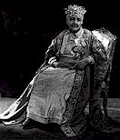

Bhopal, the capital of Madhya Pradesh, is a fascinating amalgam of scenic beauty, old historic city and modern urban planning. It is the 11th century city Bhojpal, founded by Raja Bhoj, but the present city was established by an Afghan soldier, Dost Mohammed (1707-1740). His descendants build Bhopal into a beautiful city.
The two lakes of Bhopal still dominate the city, and are indeed its nucleus. Bordered along their shores stand silent sentinels that testify to the growth of the city. Bhopal today presents a multi-faceted profile; the old city with its marketplaces and fine old mosques and palaces still bears the aristocratic imprint of its former rulers, among them the succession of powerful Begums who ruled Bhopal from 1819 to 1926. Equally impressive is the new city with its verdant, exquisitely laid out parks and gardens, broad avenues and streamlined modern edifices. It is greener and cleaner than most cities in the country.

Few state capitals in India have a history as eventful as Bhopal. The city of Bhopal has witnessed many changes since it was found by the Afghan soldier Dost Mohammed in the year 1708. The city has been through many phases, gentle as well as turbulent, prosperous as well as disastrous. Bhopal has been a city in which one finds traces of cultures as different as those of Buddhists, Hindus, Moguals and Afghans, all of which have been blended to perfection, providing Bhopal a distinct identity.
Several dynasties have left their mark on the city. The antediluvian remains of the forts built by the Rajputs, Afghans and the Moguls silently speak of the battles, victories and failures of the past era. These icons are testimony to the grandeur of past and provide a marvelous treat to the eyes. Even by seeing the remains of the city one can have the glimpse of different cultures which existed in the past . Bhopal today is the seat of administration of the state . It carries the abstruseness, the discord, the charm and the dynamism of a city where the past coexists in harmony with the present.
Many kings have ruled here and enriched the character of the city. Visiting the city is an immensely fascinating and rewarding experience . Today Bhopal has blossomed into a city which in spite of being modern upholds the patrician mark of its bygone rulers. The city provides a fascinating blend of scenic beauty with its lakes, parks, temples, mosques, gardens , museums, statues and buildings.
Bhopal is 741 km from Delhi, 789 km from Mumbai, and about 200 kms from Indore.Major Tourist attractions like Kanha, Ujjain and Sanchi are close by and well connected. Both railway station and bus stand are within easy walking distance of the main hotel area along Hamidia road.
Air :- Bhopal is connected by regular Alliance Air flights to Mumbai, Indore, Delhi and Gwalior. Sahara Airlines connect Bhopal with Delhi, Guwahati, Goa, Indore and Lucknow. Airport is 15 km from the city center.
Rail :- Bhopal is on one of the two main Delhi to Mumbai railway lines and also on the main line to the southern state capitals of Chennai, Hyderabad, Bangalore and Thiruvananthpuram. There are direct trains to Amritsar and Jammu Tawi and also to major towns in Madhya Pradesh.
Road :- There are extensive bus services (private and state) to cities within the region and interstate.
Climate :- The climate is moderate in Bhopal. The summers are hot and winters cold. But it does not face extreme weather conditions.It rains moderately during rainy season.The weather is pleasant through out the year.
Top